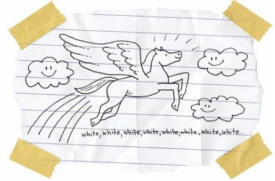
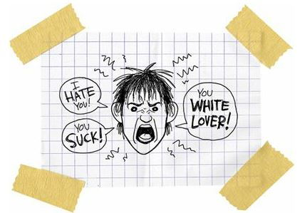

Rowdy Sings the Blues
So the day after I decided to transfer to Reardan, and after my parents agreed to make it happen, I walked over to the tribal school, and found Rowdy sitting in his usual place on the playground.
He was alone, of course. Everybody was scared of him.
“I thought you were on suspension, dickwad,” he said, which was Rowdy’s way of saying, “I’m happy you’re here.”
“Kiss my ass,” I said.
I wanted to tell him that he was my best friend and I loved him like crazy, but boys didn’t say such things to other boys, and nobody said such things to Rowdy.
“Can I tell you a secret?” I asked.
“It better not be girly,” he said.
“It’s not.”
“Okay, then, tell me.”
“I’m transferring to Reardan.”
Rowdy’s eyes narrowed. His eyes always narrowed right before he beat the crap out of someone. I started shaking.
“That’s not funny,” he said.
“It’s not supposed to be funny,” I said. “I’m transferring to Reardan. I want you to come with me.”
“And when are you going on this imaginary journey?”
“It’s not imaginary. It’s real. And I’m transferring now. I start school tomorrow at Reardan.”
“You better quit saying that,” he said. “You’re getting me mad.”
I didn’t want to get him mad. When Rowdy got mad it took him days to get un-mad. But he was my best friend and I wanted him to know the truth.
“I’m not trying to get you mad,” I said. “I’m telling the truth. I’m leaving the rez, man, and I want you to come with me. Come on. It will be an adventure.”
“I don’t even drive through that town,” he said. “What makes you think I want to go to school there?”
He got up, stared me hard in the eyes, and then spit on the floor.
Last year, during eighth grade, we traveled to Reardan to play them in flag football. Rowdy was our star quarterback and kicker and middle linebacker, and I was the loser water boy, and we lost to Reardan by the score of 45–0.
Of course, losing isn’t exactly fun.
Nobody wants to be a loser.
We all got really mad and vowed to kick their asses the next game.
But, two weeks after that, Reardan came to the rez and beat us 56–10.
During basketball season, Reardan beat us 72–45 and 86–50, our only two losses of the season.
Rowdy scored twenty-four points in the first game and forty in the second game.
I scored nine points in each game, going 3 for 10 on three-pointers in the first game and 3 for 15 in the second. Those were my two worst games of the season.
During baseball season, Rowdy hit three home runs in the first game against Reardan and two home runs in the second but we still lost by scores of 17–3 and 12–2. I played in both losses and struck out seven times and was hit by a pitch once.
Sad thing is, getting hit like that was my only hit of the season.
After baseball season, I led the Wellpinit Junior High Academic Bowl team against Reardan Junior High, and we lost by a grand total of 50–1.
Yep, we answered one question correctly.
I was the only kid, white or Indian, who knew that Charles Dickens wrote A Tale of Two Cities. And let me tell you, we Indians were the worst of times and those Reardan kids were the best of times.
Those kids were magnificent.
They knew everything.
And they were beautiful.
They were beautiful and smart.
They were beautiful and smart and epic.
They were filled with hope.
I don’t know if hope is white. But I do know that hope for me is like some mythical creature:

Man, I was scared of those Reardan kids, and maybe I was scared of hope, too, but Rowdy absolutely hated all of it.
“Rowdy,” I said. “I am going to Reardan tomorrow.”
For the first time he saw that I was serious, but he didn’t want me to be serious.
“You’ll never do it,” he said. “You’re too scared.”
“I’m going,” I said.
“No way, you’re a wuss.”
“I’m doing it.”
“You’re a pussy.”
“I’m going to Reardan tomorrow.”
“You’re really serious?”
“Rowdy,” I said. “I’m as serious as a tumor.”
He coughed and turned away from me. I touched his shoulder. Why did I touch his shoulder? I don’t know. I was stupid. Rowdy spun around and shoved me.
“Don’t touch me, you retarded fag!” he yelled.
My heart broke into fourteen pieces, one for each year that Rowdy and I had been best friends.
I started crying.
That wasn’t surprising at all, but Rowdy started crying, too, and he hated that. He wiped his eyes, stared at his wet hand, and screamed. I’m sure that everybody on the rez heard that scream. It was the worst thing I’d ever heard.
It was pain, pure pain.
“Rowdy, I’m sorry,” I said. “I’m sorry.”
He kept screaming.
“You can still come with me,” I said. “You’re still my best friend.”
Rowdy stopped screaming with his mouth but he kept screaming with his eyes.
“You always thought you were better than me,” he yelled.
“No, no, I don’t think I’m better than anybody. I think I’m worse than everybody else.”
“Why are you leaving?”
“I have to go. I’m going to die if I don’t leave.”
I touched his shoulder again and Rowdy flinched.
Yes, I touched him again.
What kind of idiot was I?
I was the kind of idiot that got punched hard in the face by his best friend.
Bang! Rowdy punched me.
Bang! I hit the ground.
Bang! My nose bled like a firework.
I stayed on the ground for a long time after Rowdy walked away. I stupidly hoped that time would stand still if I stayed still. But I had to stand eventually, and when I did, I knew that my best friend had become my worst enemy.
